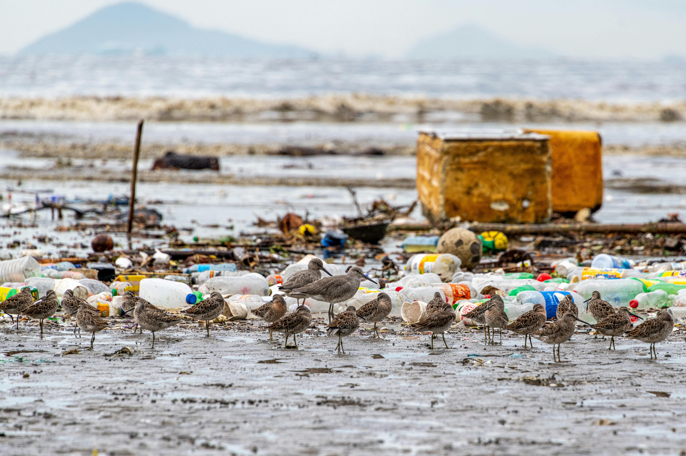
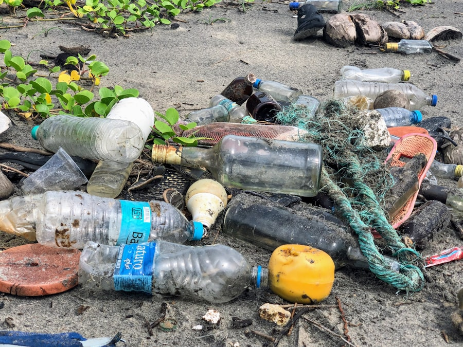
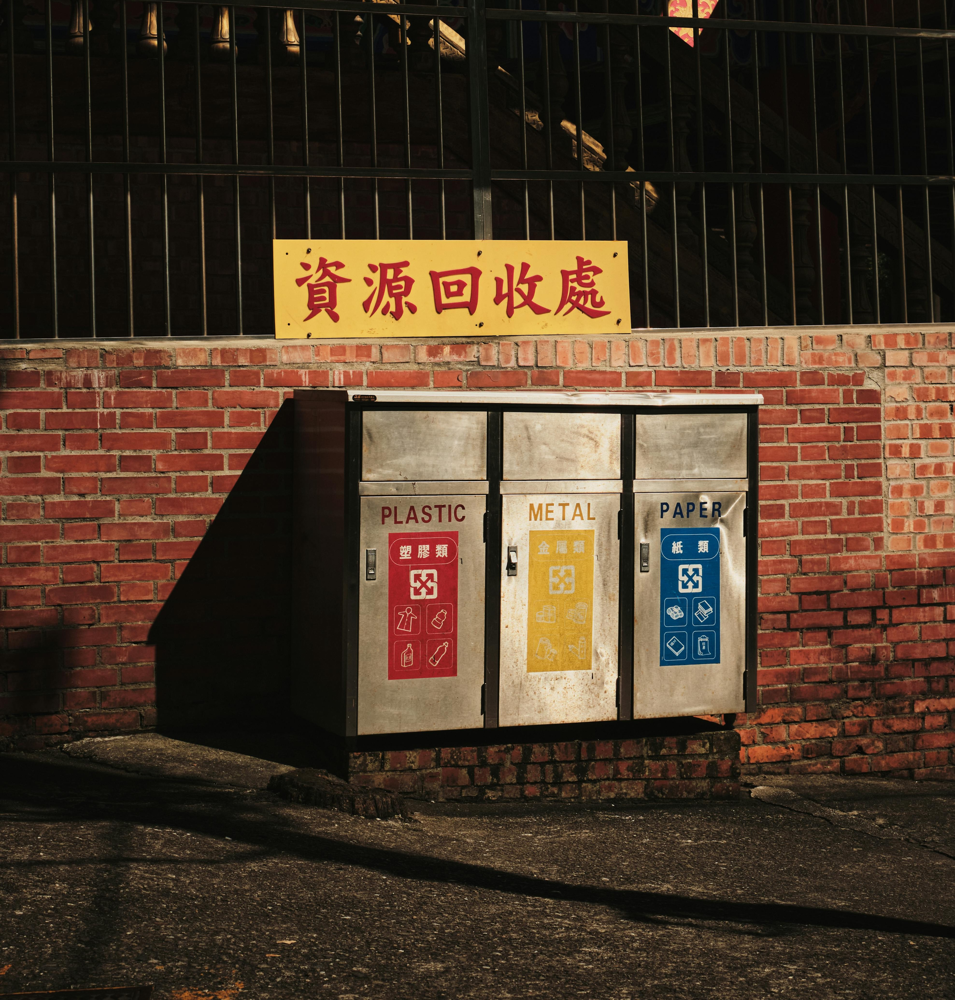
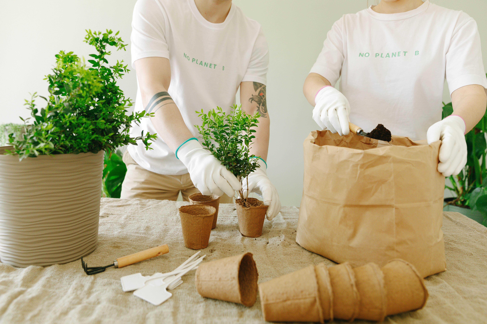
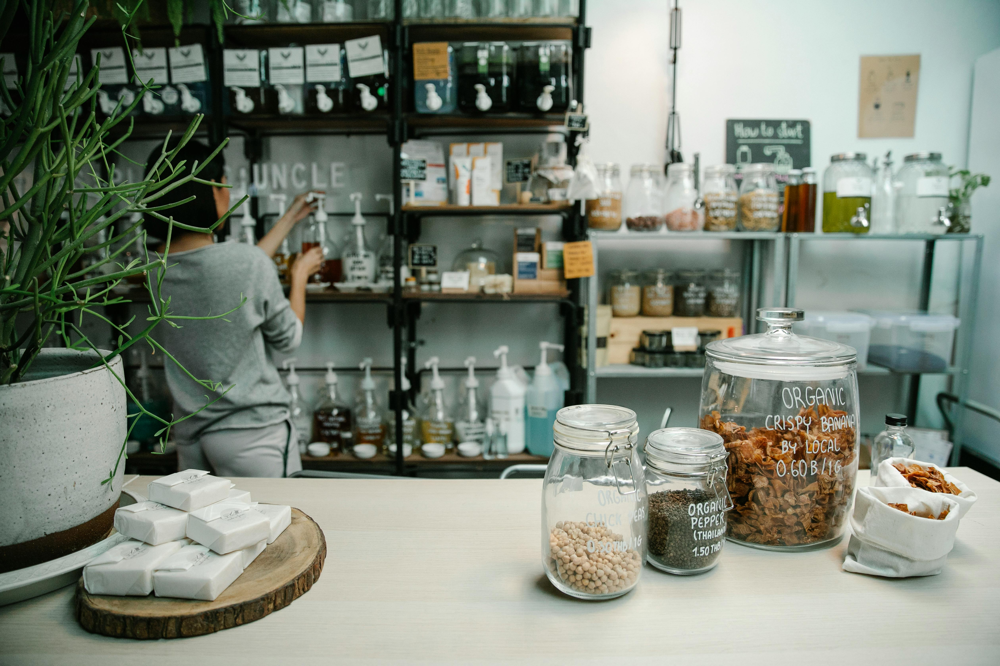
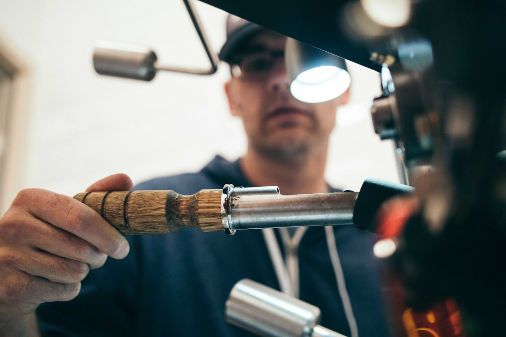

Reducing Plastic Waste & Sustainable Packaging
How single-use plastics are choking our planet — and what smarter packaging choices can do to turn the tide.
The Plastic Problem
Since mass plastic production began in the 1950s, humanity has generated over 8.3 billion tonnes of plastic — and roughly 91% of it has never been recycled. Single-use plastics such as bags, bottles, straws, and food packaging make up the majority of plastic waste, designed to be used for mere minutes yet lasting hundreds of years in the environment. Global plastic production is expected to double by 2040 unless urgent action is taken.

- Carry a reusable bag and refuse plastic bags at checkouts
- Switch to a reusable water bottle and coffee cup
- Choose products with plastic-free or minimal packaging
Environmental Impact
Plastic pollution poses one of the most serious threats to ecosystems on Earth. Unlike organic materials, plastics do not biodegrade — they break down into progressively smaller fragments called microplastics, which now contaminate every environment from the deepest ocean trenches to mountain snowpacks and human bloodstreams. Plastic production itself is also a major source of greenhouse gas emissions, as most plastics are derived from fossil fuels.

Key environmental issues
- Ocean pollution: Plastic debris entangles and is ingested by marine wildlife, affecting over 700 species including sea turtles, seabirds, and whales.
- Microplastics: Tiny plastic particles have been found in drinking water, soil, food, and even human lungs and blood.
- Greenhouse gases: Manufacturing and incinerating plastics releases CO₂ and methane, contributing significantly to climate change.
- Soil degradation: Plastic waste in agricultural land reduces soil fertility and contaminates crops over time.
Communities at Risk
The burden of plastic pollution is not shared equally. Low-income communities and developing nations — which often lack formal waste management infrastructure — bear a disproportionate share of the harm. Open burning of plastic waste, a common practice where landfill access is limited, releases toxic dioxins that cause serious respiratory and developmental health problems. Coastal and island communities dependent on fisheries face the greatest economic and food-security impacts from ocean plastic contamination.

As consumers in wealthier nations, the choices we make — from the packaging we accept to the brands we support — directly influence global plastic production. Demanding better from corporations and governments, while making smarter personal choices, can drive real systemic change.
What You Can Do
Tackling plastic waste starts with everyday decisions. You do not need to eliminate plastic overnight — but small, consistent swaps reduce demand, send market signals, and inspire others around you.

- Carry a reusable water bottle, coffee cup, and shopping bag to avoid single-use alternatives
- Choose products with minimal or plastic-free packaging when shopping in stores or online
- Refuse plastic straws, cutlery, and condiment sachets — ask for alternatives or bring your own
- Buy in bulk where possible to reduce the ratio of packaging to product
- Return or recycle packaging correctly — check local recycling guidelines carefully
- Support brands and businesses that use compostable, recycled, or refillable packaging
- Participate in local litter picks or beach cleans to remove plastic before it reaches waterways
- Spread awareness — share facts with friends and family about plastic's true environmental cost
- Swap one single-use item for a reusable alternative
- Check your local recycling guidelines and sort correctly
- Join or organise a community litter pick near you
Sustainable Packaging Alternatives
Innovation in packaging is accelerating rapidly. From seaweed-based films to mushroom packaging and refill-and-return schemes, businesses and researchers are developing exciting alternatives to single-use plastic. Supporting these solutions — whether as a consumer, student researcher, or future professional — is one of the most impactful ways to drive change.

Biodegradable & Compostable Materials
Plant-based packaging made from cornstarch, sugarcane bagasse, or seaweed breaks down naturally without leaving harmful residues in soil or water.

Refill & Reuse Systems
Refill stations for household products, glass milk deliveries, and deposit-return bottle schemes drastically cut single-use plastic by keeping containers in circulation.

Recycled-Content Packaging
Packaging made from post-consumer recycled plastics or paper keeps materials in use longer, reducing the need for virgin resource extraction and associated emissions.